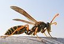
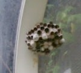
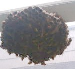

（352）蜂の巣
|
σ(-_-)が住んでいるのははイナカ市。家の近くには畑や田ん甫もあり、けっこう自然が豊か。そんなんなので、毎年 春になると、軒下や物干しの下にハチが巣をつくる。ハチのことはよく知らないが、ウイキで見ると
どうやらアシナガバチの１種。性質はスズメバチに比べればおとなしく、巣を刺激しなければまず刺してはこない（そうだ）。たしかに かなり近寄って観察しても、襲われたことはない。
こんな感じのハチ
最初は女王蜂が１匹で巣を造り始める。子供が成長すると、巣がだんだん大きくなる。しかし巣の大きさは せいぜい直径５センチほどまで。ハチの数も10数匹程度。冬になるとハチは１匹もいなくなって、巣も放棄される。
放棄された去年のハチの巣
今年の春も、駐車場のプラスチックの天井に巣を作った。（おお、今年はここか）と思っていると、どんどん大きくなって直径15センチ以上に。ハチもたぶん30匹以上はいる。（おぉ 今年はすごいな）と 大いに気に入っている。

するとめざとくみつけた近所の人が、
「役所に云えば、駆除してくれますよ」
「いえ、まぁ、おとなしいので....」と適当に返事すると、
「そんなこと云ってると、いつか刺されますよ」
大きなお世話じゃ....ハチは飼ってるんだから....(^-^；
|
機長 投稿日：2010/09/23(Thu)
どうも機長です(挨)
雑談見せてもらいました
蜂なら過去に車庫の屋根に2、3回<同じところ>に作られたことがありますね
まぁさすがに旅館とかにあるような巨大な巣はぶら下がってませんが <テレビで地中に埋まってるのを見た>
>ハチは飼ってるんだから
うちは南京虫を飼ってますよ <実は植木鉢に勝手に住み着いた>
次の虫雑談は…そうだな寒くなってくるから蜘蛛かな(想)
|
あさみ 投稿日：2010/09/24(Fri)
ども、機長さん(^-^)/
さすがに南京虫は飼っていませんが(笑)、クモやトカゲやコオロギなら たくさん飼ってます。(~o~)
あ、庭にはヘビだって飼ってます。(^-^；
※20センチほどで細長いヒモみたいな感じ。１年に一度くらい見かけます。
|